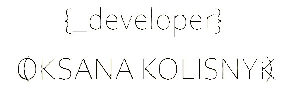
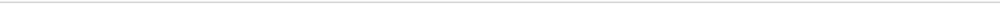

<footer class="footer">
  <div class="footer__container">
    <div class="footer__logo">
      <a href="index.html">
        
      </a>
    </div>
    <div class="footer__nav-primary">
      <div class="footer__primary">
        <ul class="footer__links footer__container-link">
          <li>
            <a
              href="tel:+380931591080"
              class="footer__links-link footer__links-link-phone"
              >+380 93 159 1080</a
            >
          </li>
          <li>
            <a
              href="mailto:zazera777@gmail.com"
              class="footer__links-link footer__links-link-mail"
              >zazera777&#64;gmail.com</a
            >
          </li>
        </ul>
        <div>
          <ul class="footer__nav-logos">
            <li>
              <a href="https://github.com/TEZv" class="footer__link">
                
              </a>
            </li>
            <li>
              <a href="https://t.me/kosatik" class="footer__link">
                
              </a>
            </li>
            <li>
              <a
                href="https://www.linkedin.com/in/oksana-kolisnyk-0b9632247"
                class="footer__link"
              >
                
              </a>
            </li>
          </ul>
        </div>
      </div>
    </div>
  </div>
  
  <div class="footer__container footer__nav-container">
    <div class="footer__primary">
      <div class="footer__links">
        <button class="footer__links-button">Fill up the Form</button>
        <a
          [routerLink]="['/blog']"
          [target]="linkTarget"
          class="footer__links-link footer__links-link-blog"
          >Blog</a
        >
      </div>
    </div>
    <p>
      Designed and built by <span>Oksana Kolisnyk & Ruslan Dzobko</span> with
      <span>Love</span> / <span>Coffee</span>
    </p>
  </div>
</footer>
